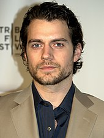

|  | Name | Henry Cavill |
|---|---|---|
| Full Name | Henry William Dalgliesh Cavill | |
| Born | 5 May 1983 (age 38) Saint Helier Jersey | |
| Nationality | British | |
| Education | Stowe School | |
| Occupation | Actor | |
| Year active | 2001-present | |
| Height | 6"1' |
Cavill was born on 5 May 1983, the fourth of five boys in Saint Helier, Jersey, part of the Channel Islands. His mother, Marianne Dalgliesh, was a secretary in a bank. She was born in Jersey and is of Scottish, English and Irish heritage. His father, Colin Cavill, was born in Chester, England and was a stockbroker. He was educated at St Michael's Preparatory School in Saint Saviour, Jersey, before attending Stowe School in Stowe, Buckinghamshire. In 2000, while playing rugby, 16-year-old Cavill met actor Russell Crowe, who was shooting on location at Stowe for the film Proof of Life. The actor shared some acting tips and later sent a package to his boarding school. The two actors later worked together on Man of Steel.
Cavill began his film career with a role in Laguna (2001) and Kevin Reynolds' adaptation of The Count of Monte Cristo (2002). He continued with appearances in BBC's The Inspector Lynley Mysteries (2002), the television film Goodbye, Mr. Chips (2002), and the television series Midsomer Murders (2003). In 2003, he had a supporting role in I Capture the Castle, followed by Hellraiser: Hellworld (2005), Red Riding Hood (2006) and Tristan & Isolde (2006). He had a minor role in Matthew Vaughn's adaptation of Stardust (2007).
From 2007 to 2010, Cavill had a leading role in Showtime's television series The Tudors, as Charles Brandon, 1st Duke of Suffolk. The series was commercially well-received and it went on to be nominated for a Golden Globe in 2007 and won an Emmy in 2008. Cavill gave the show credit for bolstering his career: "It's done the most for me to date. Now that there's an audience somewhere in America that's aware of who I am, I have more sell-ability, because of The Tudors." Entertainment Weekly named him the "Most Dashing Duke" and praised his work on The Tudors for displaying "charm, depth and a killer bod".
List of films
| Year | Title | Director | Writer | Co-Stars | Role |
|---|---|---|---|---|---|
| 2001 | Vendetta | Dennis Berry | Augusto Caminito | Emmanuelle Seigner, Joe Mantegna | Thomas |
| 2013 | Man of Steel | Zack Snyder | David S.Gover | Amy Adams, Michael Shannon | Clark Kent |
| 2016 | Batman v Superman :Dawn of Justice | Zack Snyder | Chris Terrio | Ben Affleck, Amy Adams | Clark Kent |
| 2018 | Mission: Impossible - Fallout | Christoper McQuarrie | Bruce Geller | Tom Cruise, Ving Rhames | August Walker |
| 2020 | Enola Homes | Harry Bradbeer | Jack Thorne | Millie Bobby Brown, Sam Claflin | Sherlock Homes |
| 2019-2021 | The Witcher | Stephen Surjik | Lauren Schmidt-Hissrich | Freya Allan, Anya Chalotra | Geralt of Riva |